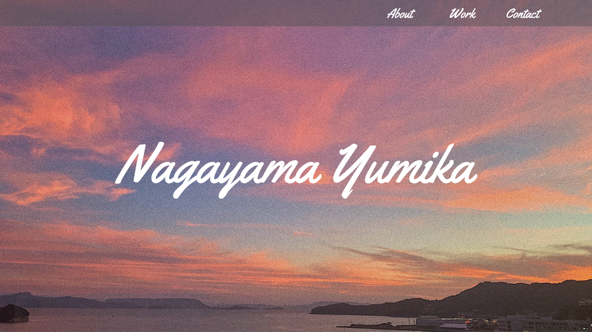

Portfolio
| 目的 | 転職目的 |
| デザイン | ロゴマークは小さい頃大好きだったものと自分の名前を表現したデザインとなっています。 小さい頃は好奇心旺盛で活発な子でした。とにかく外遊びが大好きで、山に登ったり、海やプールで 泳いだり、じいちゃんともか(愛犬)と一緒に森や田園で散歩したり、昆虫狩りや自然と触れ合ってき ました。 そして、自分の苗字である「永山」。「永」は果てしなく永遠に続く海、「山」は文字通りの山を表しています。 ロゴマークのモチーフである海と山。子供のころ大好きだった場所と自分の苗字を重ねて、このデザイン にしました。 |
| 制作範囲 | デザイン/コーディング |
| 制作期間 | デザイン:1ヶ月 コーディング:1ヵ月半 |
| 使用ツール | XD/Illustrator/Photoshop/VScode |
| 使用言語 |